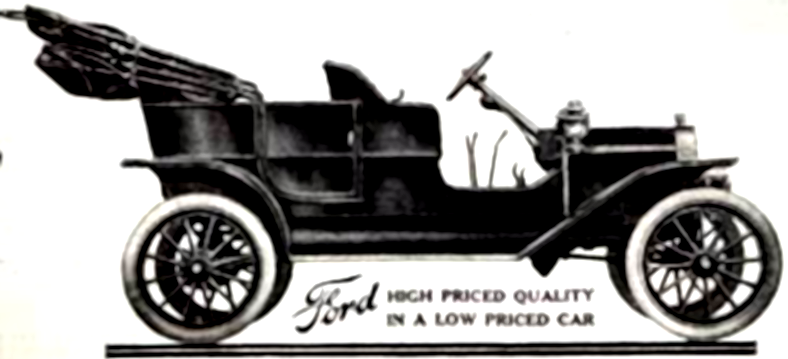
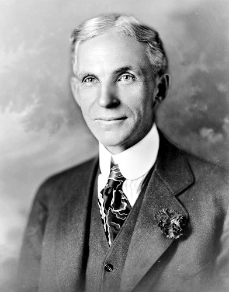

1908 Model T

Henry Ford - 1919
Life and Legacy
- 1863 Born to William and Mary Ford in Greenfield Township, Michigan.
- 1879-1882 Recieved an apprenticeship to work as a mechanist in Detroit.
- 1888 Married Clara Jane Bryant.
- 1891 Began working as an engineer with Edison Illuminating Company.
- 1893 Had a son who he named Edsel Ford.
- 1896 Completed his first self-propelled vihicle named "Ford Quadricycle".
- 1899-1901 Resigned from Edison in 1899 and founded Detroit Automobile Company which lasted until 1901.
- 1902-1904 Founded Ford Motor Company and set the land speed record of 91.3 mph with the Ford model "999".
- 1908 The first Model T was introduced, costing $825 which is the equivalent of $22,470 in 2015.
- 1913 Ford introduced the first moving assembly belts reducing the time to assemble a vehicle by 800 percent.
- 1914-1922 Ford introduced the "$5 a day wage" in 1914 to all capable men in his company. This attracted high quality workers and cut down turnover dramatically. At this wage, his employees could purchase a vehicle with less than four months of savings. This equated to $120 a day, or $15 an hour by today's standards. In 1922, he also introduced the 40 hour work week.
- 1917-1918 Despite being an advant pacifist, Ford became a major manufacturer of aircraft engines and weapons when the United States entered the first World War until the ending of the war.
- 1918 Ford turned over the presidency of the company to his son but retained authority over final decisions.
- 1925-1927 The production of the Model T reached over 15 million in 1927, marking a record that would stand for the next 45 years. The price of the Model T dropped to a low of $260 by 1925 which allowed it to account for nearly 50 percent of all vehicles owned in the US at the time.
- 1925-1933 Ford acquired the Stout Metal Airplane Company and produced airplanes until the division was shut down during the great depression.
- 1941 Ford reluctantly recognized the UAW(United Automobile Workers) union following a strike which shut down the River Rouge Plant in 1941. This came after a long and sometimes violent stalemate regarding any form of agreements with the unions. He believed their interests would restrict productivity and economic prosperity, ultimately causing more harm than good to the workers by leading to less economic growth and fewer new jobs.
- 1939-1941 Ford again did not want to be involved in World War 2 due to his pacifist beliefs.
- 1941-1945 After the attack on Pearl Harbor, Ford built the largest assembly line in the world at the time at a newly constructed factory near Detroit, Michigan. At its peak in 1944, the Willow Run plant produced 650 B-24 bombers per month, completing each aircraft in 18 hours and producing one aircraft every 58 minutes. The production created by Ford accounted for roughly half of the B-24s produced during the war.
- 1943-1945 Ford resumed official control of the company when his son died in 1943. In 1945, his grandson assumed control of the company due to Ford's health after multiple strokes.
- 1947 Ford died at the age of 83.